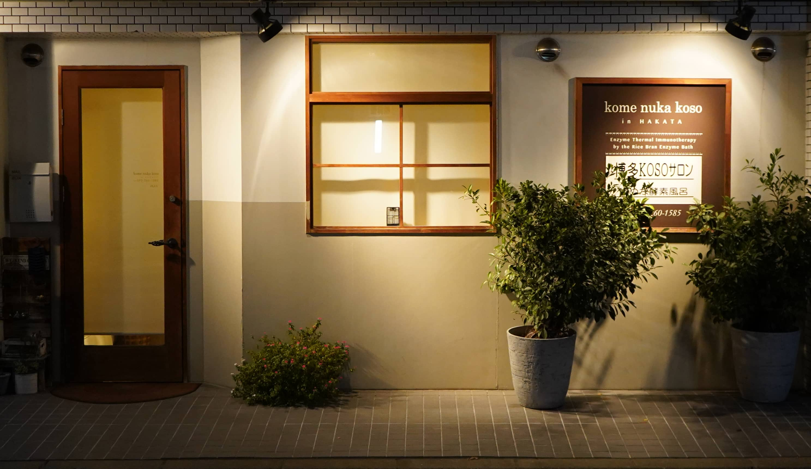
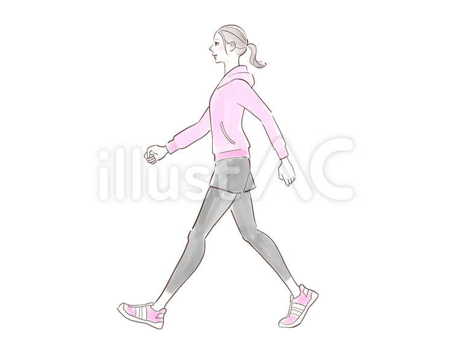
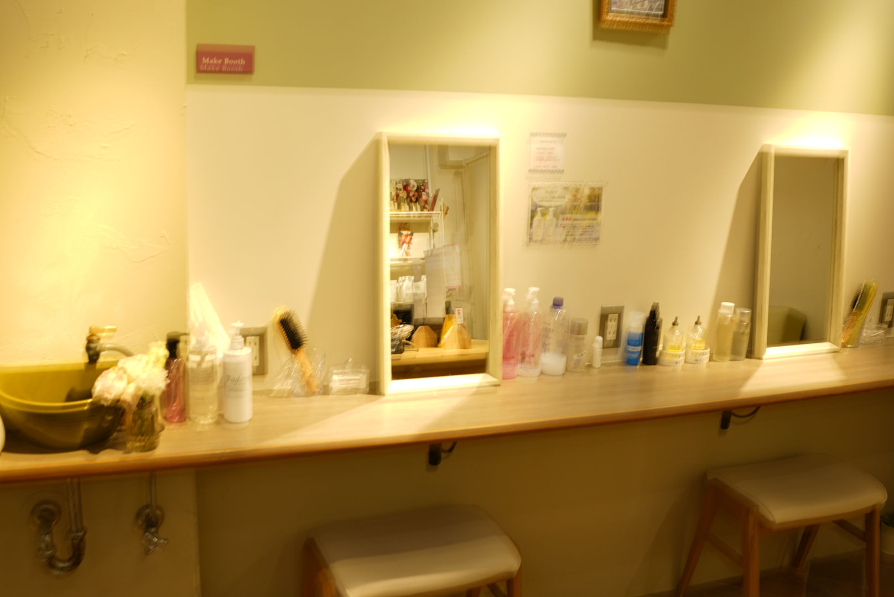

米ぬかとは

米ぬか酵素風呂について
電気やガスなどの人工熱を使用せず、自然発酵による発酵熱を使用したお風呂のことです 博多KOSOサロンでは、米ぬか100%と水と空気を使用して発酵させています。 微生物の力で米ぬかが発酵し、発酵する過程の発熱を利用して入浴するのが酵素風呂です。
博多酵素サロン
主に九州産の脱脂米ぬかを使用し、水と空気以外の添加物は使用せず自然発酵させた米ぬか酵素風呂です。 博多KOSOサロンの米ぬか酵素風呂の温度は 60度～68度程度で、微生物が一番元気に活発に過ごせる温度に保つように手入れをしています。 実際にその温度の酵素風呂に入ると体感温度は39度～41度で家庭のお風呂と変わりありません。
効果、効能

免疫力向上効果
温熱効果により体温が上昇すると免疫力アップが期待でき、細胞の新陳代謝が加速し自然治癒力も高まります。
リラックス効果
酵素風呂の温度は60度以上ですが、体感は温かいお風呂に入っているような感じで心も身体もリラックスできます。包み込むように温めるので自律神経の高ぶりを抑え疲労回復も期待できます。
美肌効果
米ぬかはビタミン、ミネラルた保湿効果を高める油分が豊富に含まれ、美肌効果も期待できます。
デトックス効果
博多KOSOサロンの米ぬか酵素風呂は、微生物が活発で自然発酵力が強く、天然の遠赤外線効果により身体の芯まで温まります。よって熱が冷めにくく発汗作用も高まります。

冷え性改善効果
遠赤外線効果により身体の芯まで温まり、血流が向上することで末端冷え性、偏頭痛、肩こりなどの慢性症状の改善にも期待できます。ただし、のんびりでも良いので酵素風呂に入り続けることをおすすめします。